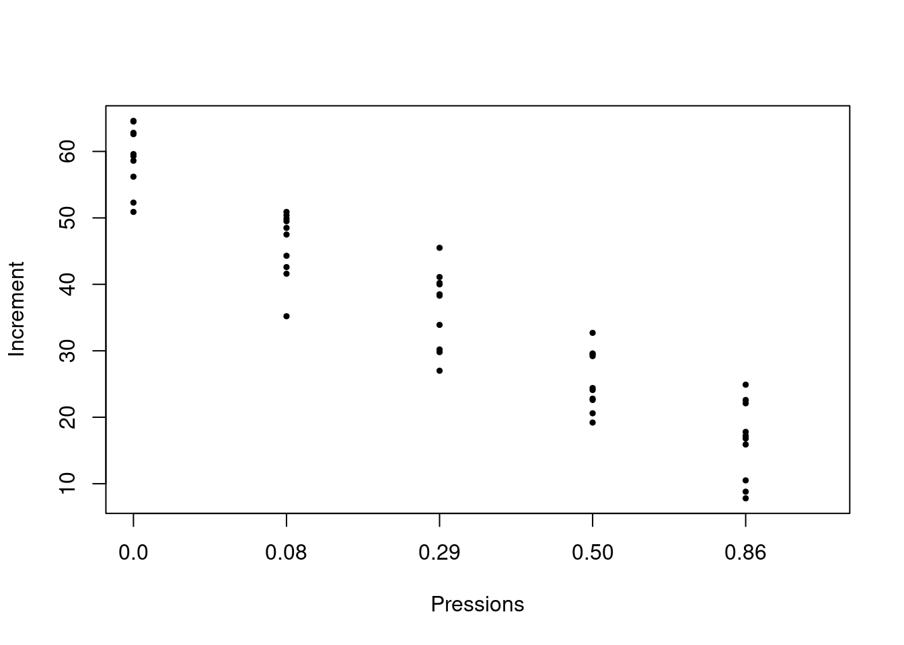

Comencem recordant un exemple de Matemàtiques I.
Exemple 1.1 La taula següent dóna l’alçada mitjana (en cm) dels nins a determinades edats (en anys):
| edat | alçada |
|---|---|
| 1 | 75 |
| 3 | 92 |
| 5 | 108 |
| 7 | 121 |
| 9 | 130 |
| 11 | 142 |
| 13 | 155 |
A Matemàtiques I aprenguéreu a calcular amb R la “millor” relació lineal \[ \text{alçada}= b_0+b_1\cdot\text{edat} \] de la manera següent:
edat=c(1,3,5,7,9,11,13)
alçada=c(75,92,108,121,130,142,155)
lm(alçada~edat)##
## Call:
## lm(formula = alçada ~ edat)
##
## Coefficients:
## (Intercept) edat
## 72.321 6.464Obteníeu d’aquesta manera la recta \[ \text{alçada}=72.321+6.464x \] i la representàveu amb:
plot(edat,alçada,pch=20)
abline(lm(alçada~edat),col="red",xlab="Edat",ylab="Alçada")
Ara podíeu emprar aquesta recta per estimar l’alçada d’un nin d’una edat concreta. Per exemple, ens permet estimar que l’alçada d’un nin d’10 anys és \[ 72.321+6.464\cdot 10=136.964, \] uns 137 cm.
En aquest tema estudiarem com es calcula aquella recta, què vol dir que sigui “la millor recta” que explica l’alçada dels nins en funció de l’edat, com trobar intervals de confiança per a les estimacions associades a aquesta recta i com tractar el problema més general de trobar “la millor funció lineal” que explica una variable \(Y\) en funció de diverses variables \(X_1,\ldots,X_k\).